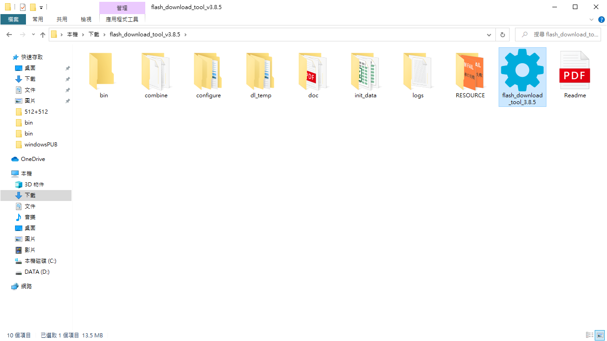
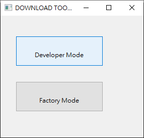
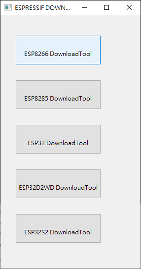
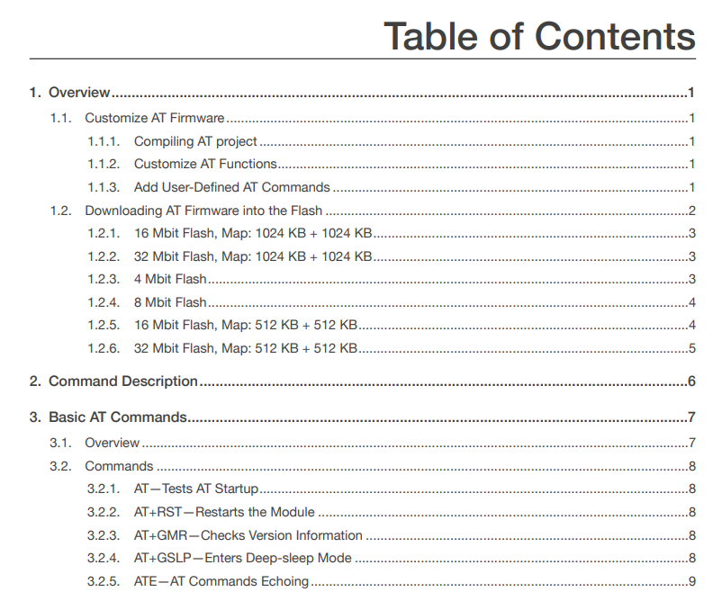
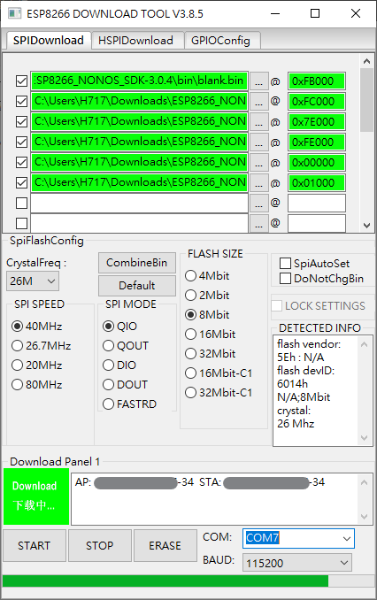
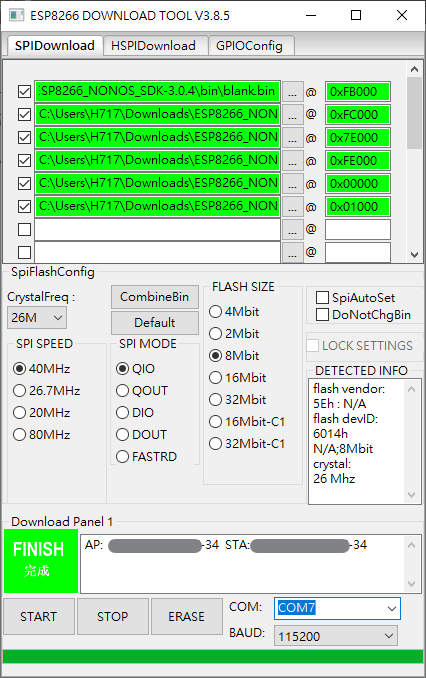
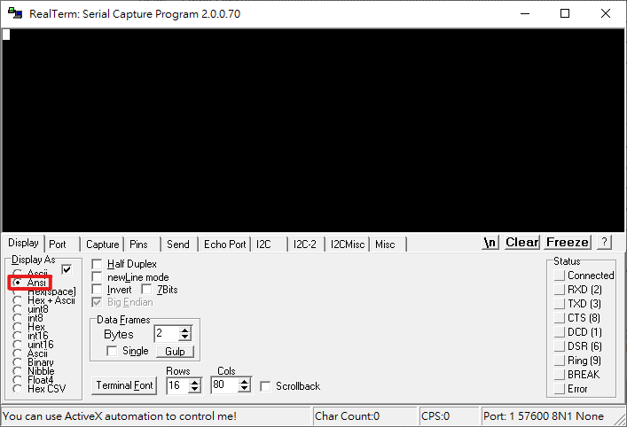
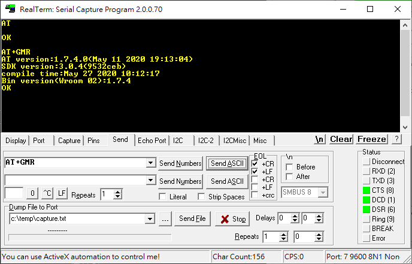

在使用ESP8266有時會遇到兩種情況，原廠出貨的韌體怪怪的導致無法使用AT指令跟ESP8266溝通，或是已經把自己的程式燒進去之後又想重新使用AT指令的功能，這時候就需要重新燒錄韌體，這篇筆記紀錄使用ESP-01作為範例的韌體燒錄及AT指令驗證步驟
材料
硬體
- ESP-01s
- ESP-01燒錄器
軟體
- Flash Download Tools (ESP8266 & ESP32 & ESP32-S2) V3.8.5
- RealTerm 2.0.0.70
SDK
- ESP8266 NONOS SDK V3.0.4
AT指令集(含韌體燒錄位址說明)
- ESP8266 Non-OS AT Instruction Set V3.0.3
準備所需軟體及韌體
點擊下方連結下載燒錄工具、韌體及指令集
連接ESP-01
將ESP-01插在燒錄器上，並將燒錄器插入USB Port
接著按下Windows鍵+R，輸入devmgmt.msc按下確定，進入裝置管理員查看燒錄器的COM Port(範例為COM7)

設定燒錄資訊
點擊flash_download_tool_3.8.5.exe執行燒錄程式

選擇Developer Mode

選擇ESP8266 DownloadTool

韌體燒錄位址表在AT指令集裡可以找到，在1.2. Downloading AT Firmware into the Flash裡的1.2.4. 8 Mbit Flash有詳細說明


解壓縮已經下載好的ESP8266_NONOS_SDK-3.0.4檔案，在裡面尋找bin資料夾，裡面的檔案就是燒錄所需的檔案，依照韌體燒錄位址表進行設定，將特定檔案對上相對的位址，並將左邊方格打勾
FLASH SIZE記得要改為8Mbit(ESP-01的Flash size為1MB，也就是8Mbit)
右下角的COM選單選擇剛才在裝置管理員看到的COM Port編號
BAUD設為115200

執行韌體燒錄程式
設定完成之後按下START按鈕便可開始進行燒錄
若有抓到ESP-01會顯示Download下載中...，後面的方格也會顯示ESP-01的MAC位址

若燒錄成功會顯示FINISH完成

檢查燒錄狀態
開啟RealTerm終端機程式
在Display頁籤設定Display As Ansi

在Port頁籤設定
- Baud為115200(若無回應可嘗試其他BaudRate)
- Port為USB燒錄器的COM Port編號(可至裝置管理員確認，或移除裝置後重新插上以便確認)
- 重新按壓Open按鈕，確認為壓下狀態(有任何更改都可以重新按壓，確保狀態有被改變)
- 確認右下角狀態是否正確

在Send頁籤勾選EOL的前兩個，輸入要傳送的指令後按下Send ASCII即可傳送指令
- AT - 測試AT是否已啟動
- AT+GMR - 查詢AT及SDK的版本資訊


若送出指令AT有返回OK，且送出指令AT+GMR有返回版本資訊便可開始使用ESP-01了
參考資料
ESPRESSIF
ESP8266 NONOS SDK
Flash Download Tools
ESP8266 Non-OS AT Instruction Set
ESP8266 ESP-01s測試(01)利用USB 轉TTL模組